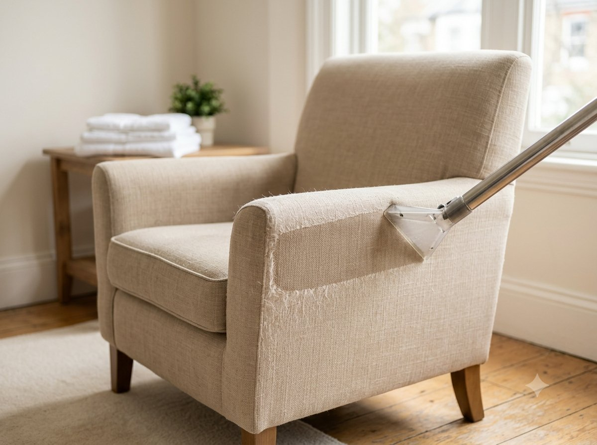

Звоните ежедневно 09:00–00:00+7 (925) 518-63-37
Заказать уборку

Профессионально очищаем диваны, кресла, стулья и другую мягкую мебель на дому. Подбираем метод чистки индивидуально в зависимости от типа ткани и степени загрязнения.
Не нужно вывозить мебель — приезжаем с оборудованием прямо к вам.
Учитываем тип ткани, чтобы не повредить материал и добиться максимального результата.
Используем гипоаллергенные составы, безопасные для детей и животных.
Мебелью можно пользоваться уже в тот же день после обработки.
Стоимость известна заранее по типу мебели и ткани, без доплат по факту.
Применяется для деликатных тканей, которые нельзя обрабатывать водой — например, велюра или некоторых видов кожи. Специальный порошкообразный или пенный состав наносится на поверхность, впитывает загрязнения и удаляется без остатка вместе с грязью, не оставляя влаги на ткани.
Подходит для плотных и устойчивых к влаге материалов. Чистящий раствор наносится вручную щёткой, глубоко проникает в волокна ткани, эффективно растворяя загрязнения, после чего остатки состава удаляются вместе с грязью.
Наиболее глубокий метод очистки с помощью профессионального экстрактора, который одновременно наносит раствор под давлением и сразу же удаляет его вместе с растворёнными загрязнениями. Подходит для сильных и застарелых загрязнений.
| Вид дивана / мебели | Ткань | Велюр, кожа, бархат, алькантара, шёлк | Нубук, натуральная замша |
|---|---|---|---|
| 2-местный диван | 2 000 ₽ | 2 500 ₽ | 3 200 ₽ |
| 3-местный диван | 2 800 ₽ | 3 500 ₽ | 4 300 ₽ |
| Угловой диван | 3 200 ₽ | 4 000 ₽ | 5 000 ₽ |
| 6-местный диван | 4 200 ₽ | 5 300 ₽ | 6 500 ₽ |
| 7-местный диван | 4 800 ₽ | 6 000 ₽ | 7 400 ₽ |
| 8-местный диван | 5 600 ₽ | 7 000 ₽ | 8 600 ₽ |
| П-образный диван | 5 600 ₽ | 7 000 ₽ | 8 600 ₽ |
| Кресло большое | 960 ₽ | 1 200 ₽ | 1 500 ₽ |
| Кресло маленькое | 640 ₽ | 800 ₽ | 1 000 ₽ |
| Стул со спинкой | 400 ₽ | 500 ₽ | 620 ₽ |
| Стул без спинки | 240 ₽ | 300 ₽ | 380 ₽ |
| Пуфик | 440 ₽ | 550 ₽ | 680 ₽ |
| Посадочное место | 480 ₽ | 600 ₽ | 750 ₽ |
Внимание! Цены не являются окончательными. Точную стоимость услуг уточняйте у менеджеров компании — она зависит от материала, состояния и степени загрязнения мебели.